PCDC Data Portal v1.5 User Guide
Introduction
The Pediatric Cancer Data Commons (PCDC) brings together clinical, genomic, and imaging data from institutions around the world that are working to transform pediatric cancer research and outcomes. Headquartered at the University of Chicago, the PCDC works with international leaders in pediatric cancers and the US National Cancer Institute to develop and apply uniform data standards, facilitating the collection, combination, and analysis of data from many different sources.
By harmonizing existing clinical research data and leading international efforts to standardize data collection, we are breaking down long-standing barriers that have held back advancements in research on rare diseases. Our aim is to leverage this unique collaborative consortium-based approach to enable new and meaningful discoveries about pediatric cancers.
The PCDC Data Portal supports the management, analysis and sharing of data for the research community. The portal includes a data dictionary and data search functionality.
For additional information, users can watch this introductory video.
Access
The PCDC Data Portal can be accessed using a web browser by visiting https://portal.pedscommons.org/. New users to the PCDC Data Portal are prompted to login using an approved authentication provider (i.e., Google).
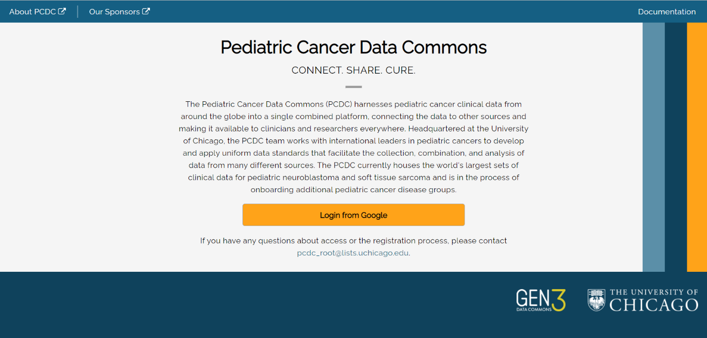
After a user successfully logs in using the authentication provider (Google) for the first time, they are prompted to associate their account with the PCDC Data Portal.
Registration of an account with the PCDC Data Portal requires users to provide their email (supplied by the authentication provider), first name, last name, and institutional affiliation (e.g. University of California Berkeley). Registration also requires that users read and acknowledge agreement with the PCDC Privacy Notice, the PCDC Terms and Conditions, and the Acceptable Use Policy.

Users who have previously registered an account will be taken directly to the main page of the PCDC Data Portal after authentication.
Users will initially have access to summary data only. Researchers can request access to line-level data by clicking the Request Access button on the Exploration page. See the Exploration section below.
Navigation
After successful login, users will see the main page.

The main navigation buttons to PCDC Data Portal pages are in the upper right-hand corner of the page:
- Dictionary
- Exploration
- Query
Profile settings can be accessed by clicking the username at the top of the page. See the Profile section below.
Dictionary
Dictionary is the data dictionary used to define the data in the portal, including what each entity (Node) represents, properties associated with the entities, and possible values.
The Dictionary is accessed by clicking the Dictionary button in the top-right hand corner of the PDCD Data Portal main page.
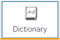
Example: for the data entity named “Cytology”, the dictionary includes seven properties as shown below.

On the right side of the Table View are Download Templates for each data element.

Templates are available in JSON (JavaScript Object Notation) or TSV (tab separated values) format. Templates are used when submitting clinical trial data for use in the portal.
The data dictionary can be viewed as a table, (shown above), or in graphical format by clicking on the Graph View button in the upper left. The Graph View shows an overview of the data model, which can be zoomed in to see individual components of the model and how they relate to one another.
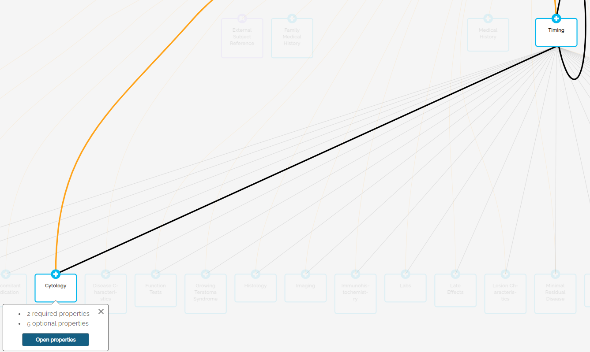
Clicking the Open Properties button will switch to the table view as shown above.

How to find an item
- In the main page click the Dictionary button. The Dictionary page is displayed.
-
Type the item you want to find in the Search in Dictionary field on the left of the page.

Items that match your search are displayed as you type:

-
Click the item in the list you want to display.

The Graph View area of the screen will highlight Nodes that include the search term(s).
The Search Results on the left side shows the number of matches in the Node title and description, as well as the number of matches in the node properties.

The Last Search field shows the number of Nodes where the term appears – in this example: 3.

Click on the Node to see the properties.

Matching search results are highlighted in amber text. Click on the See All button to toggle between matched results and all properties.

Exploration
The Exploration button at the top of the home page takes the user to the main data page allowing users to see summary data.
Users can refer to this video for an overview of the Exploration functionality.
For users who do not have access to line-level data, the top of the Exploration page will display a Request Access button.

Clicking this button will download the PCDC Project Request Form (MS Word format). Follow the instructions on the form to provide project information and request access to line-level data.
The main Exploration page shows a summary view of distributions across some key demographic variables for all cases in the PCDC that match the currently-selected filters.

The Table View tab on the main page is restricted to approved researchers who have access to line-level data.
The current Release Version of the data is included at the bottom of the left panel.
Filters and Search
The Filters panel on the left side of the Exploration page can be used to narrow the Summary View results by selected variables. Filters act upon variables in the underlying data and are available for variables in the Subject, Disease and Molecular data domains. Use the expand icon (>) to see the controls available for a given filter.
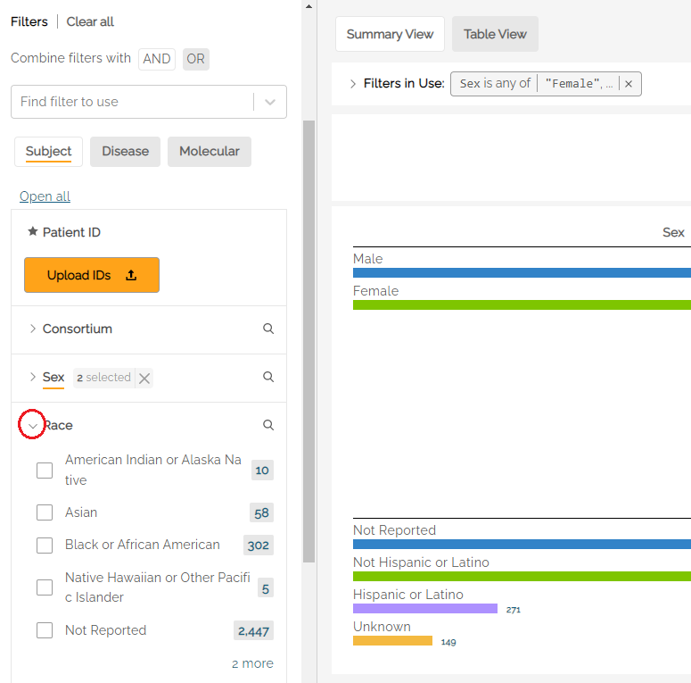
Different variable types (e.g. continuous variables, discrete variables, categorical variables) will have different controls available. For example, Race is a categorical (enumerative) variable, and categorical variable filters can be selected using checkboxes with one checkbox per value within that variable. The user can select the values of a variable they are interested in seeing as part of the population. Multiple selections within a single filter are treated as logical ‘ORs’. Therefore, a user who selects ‘Asian’ and ‘Black or African American’ would see a result set where the subjects have a Race value of either ‘Asian’ OR ‘Black or African American’.
Multiple selections made across multiple filters are treated as logical ‘ANDs’. Therefore, a user who selects ‘Asian’ and ‘Black or African American’ from the Race filter and who select ‘Male’ from the Sex filter would see a result set where the subjects have a Race value of either ‘Asian’ OR ‘Black or African American’ AND who have a Sex value of ‘Male’.
Using the above example, the Filters in Use bar at the top of the graph view shows “Sex is “Male” AND “Race is any of (logial OR) Black or African American, Asian” The AND can be switched to OR by clicking on the AND button between the two expressions. Each filter can be removed by clicking on the “x” at the end of the string.

Note: some filters, such as Age at LKSS (Last Known Survival Status) have a slider to select an age range.
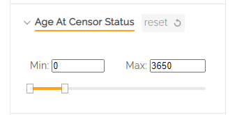
A bin size limit of five has been implemented for all data filters as an additional measure of participant privacy. Bin size refers to the minimum sample size reporting threshold. A lock icon will appear next to the filter that includes less than five subjects.

For patient observations that may be captured longitudinally, for example Tumor Site within the Disease tab, users can restrict filtering activity to a specific disease phase (e.g. Initial Diagnosis, Relapse) by clicking one of the radio buttons under Disease Phase.

For example, a user who was interested in patients with relapse disease of the bladder would select Relapse under Disease Phase and Bladder under Tumor Site to see the count of subjects that have an observation of relapse at the bladder.

Clicking on the search icon () to the right of a filter name (e.g. Tumor Site) allows users to search for a specific value in a list of categorical levels by keyword, Matching categorical level values will appear if there is a full or partial match, allowing the user to select it. The filter value can be selected by checking the box next to the name.
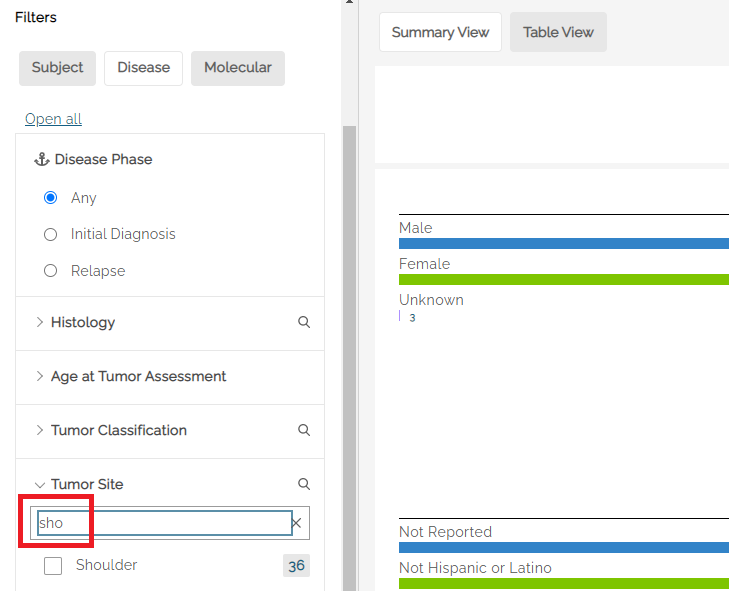
Once selected, the main page will show the filtered data set. To clear the search and see an unfiltered list of variable levels, the user should hit clear (x) within the search box.

An underline in the filter name indicates that filters are active within that tab. In the below example, both the Disease and Molecular tabs have active filters. Clicking into the tabs will show which filters are selected (also underlined). In the example below, Initial Diagnosis is selected, along with Tumor Site from within the Disease tab.
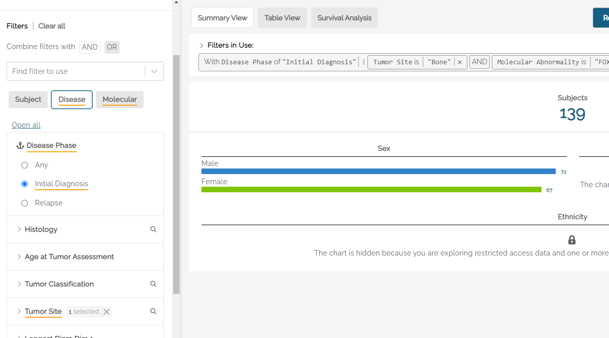
Some filters have an interdependency. Example: selecting the FOXO1-PAX3 fusion molecular abnormality should be followed by a selection of Positive, Negative, or Unknown from the Molecular Abnormality Result filter set.
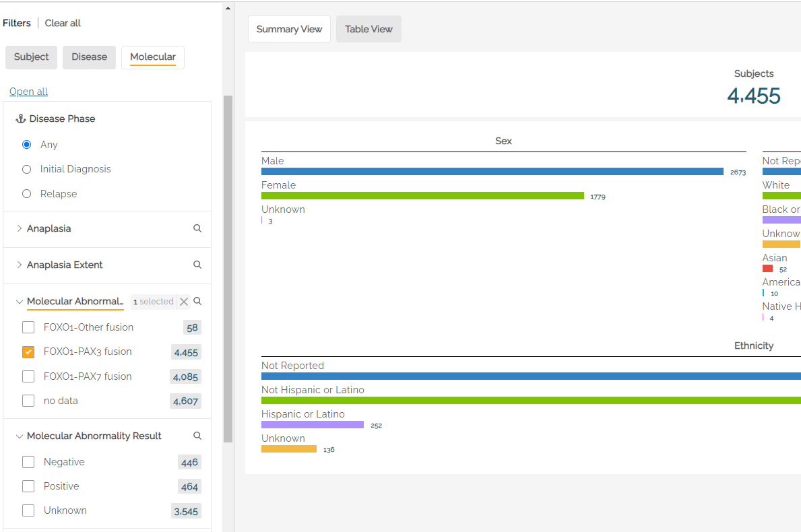
Saving a Filter Set
Once a desired filter set has been selected, users can save it accessing the Manage Filter Set drop down and clicking Save.
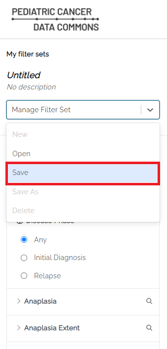
Users will be prompted to enter a name for the saved filter set.
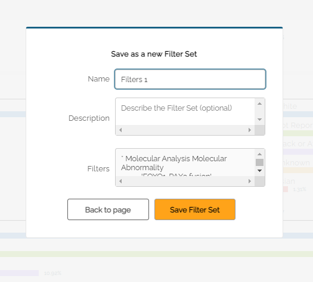
When changes are made to a saved filter set, the system will indicate the change by showing a warning icon next to “My filter sets” in the left panel. Clicking on the warning icon  will revert any changes made to the original saved filter set.
will revert any changes made to the original saved filter set.
Users can save changes to the filter set using the drop down menu, or use Save As to create a new filter set. Once changes have been saved, the warning icon will no longer be visible.

Survival Analysis
The PCDC platform includes a Survival Analysis tool that can display survival curves and Number at Risk tables. This tool will be available temporarily during a pilot phase to test the functionality and usability of the tool.
When first accessing the survival curve generator, users must agree to the Acceptable User Policy. Subsequent sessions will include a reminder of the terms whenever the Apply button is pressed.

To create a survival curve, users must first select at least one filter set to analyze. Filter Sets can be created and saved using the procedure described above.
Use the drop down labeled “Select Filter Set to Analyze” to select a saved filter set, then click the Add button to add the filter set. Optionally, a user may select “All Subjects” to see the entire data set. Additional filter sets can be added using the steps above.
Once selected, users can see the survival curve by hitting the Apply button at the bottom of the screen.
Multiple data sets can be selected and shown simultaneously. In the example below, two data sets are used: one for male and one for female participants.

Options
The survival curve can be adjusted using the options available.

The Survival type drop down can be used to select Overall or Event-Free survival.
Start time can be used to select the start time of the x-axis. Default is zero (0).
End time is used to select the maximum time (in years) that will appear on the x-axis.
Time interval is used to determine the frequency of hash marks appearing on the x-axis, both on the survival curve and in the Number at risk table shown below the curve.
Query
The Query page is used to create queries using the GraphiQL tool. (additional information to be provided in a future release of the User Guide).
User Menu
Users can access the User Menu by clicking on the username at the top right corner of the screen. The View Profile option allows users to make changes to their name and institutional affiliation.
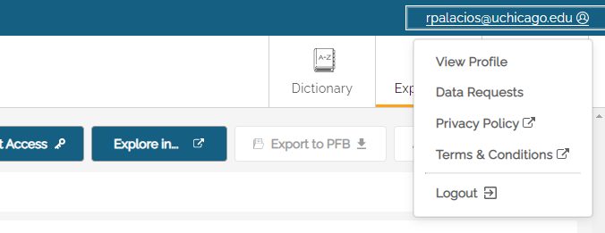
Data Requests
The Data Requests screen allows users to see the status of their data requests and, when approved, download data. At the top of the screen is a toggle button to see All Requests or only Approved Requests.
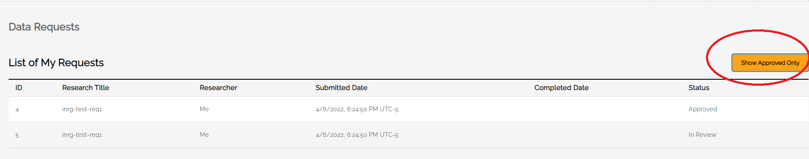
Only users who are authorized to receive requested data will see the Download Data button activated when the data is ready.

The Privacy Policy and Terms & Conditions documents are also available from the User Menu.
This page can also be used to create API Keys (additional information to be provided in a future release of the User Guide).